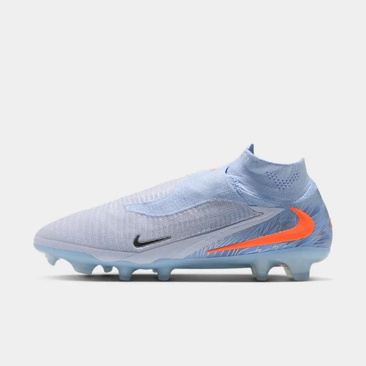
Velocity FG
Césped natural firme
Ligero para extremos que viven de la velocidad. Tacos cónicos de 12 puntos.
$89.90
Ver másEl calzado ideal para dominar la cancha
Doce modelos para cada superficie, posición y categoría. Los precios están en dólares.

Césped natural firme
Ligero para extremos que viven de la velocidad. Tacos cónicos de 12 puntos.
$89.90
Ver más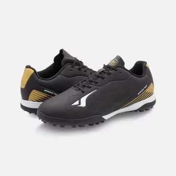
Césped artificial
Misma horma Velocity con tacos cortos para canchas sintéticas modernas.
$94.90
Ver más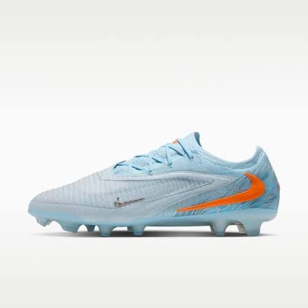
Competición
Capellada con textura para mejor contacto con el balón en el remate.
$129.90
Ver más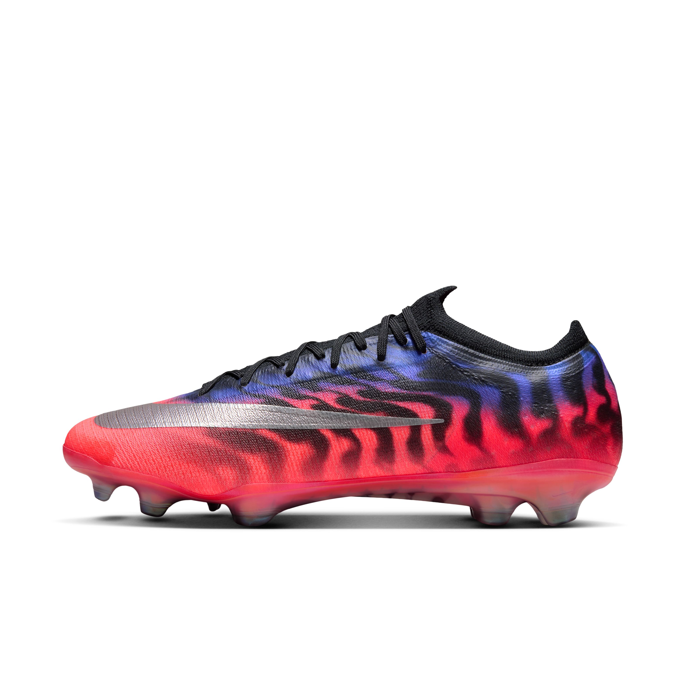
Césped natural blando
Tacos metálicos largos para terreno mojado y barro.
$119.90
Ver más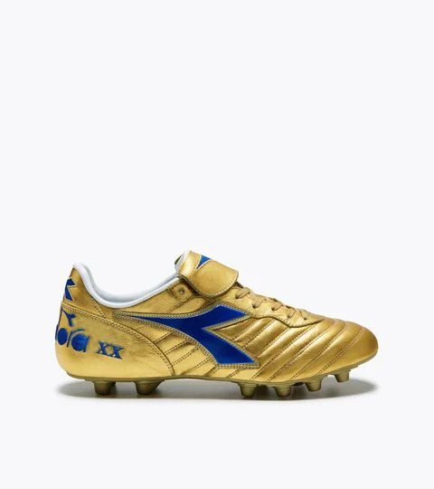
Fútbol sala
Suela de goma lisa para giros rápidos en parqué y cemento pulido.
$59.90
Ver más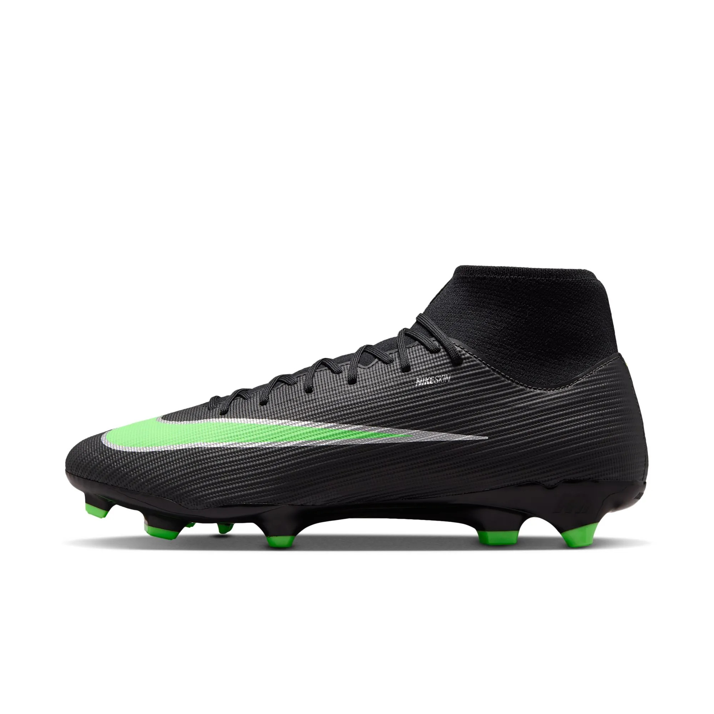
Fútbol sala
Refuerzo en la puntera y plantilla acolchada para partidos largos.
$74.90
Ver más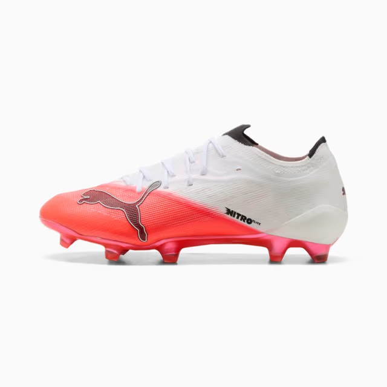
Entrenamiento
Taquetes de goma pequeños para sesiones en cancha sintética gastada.
$54.90
Ver más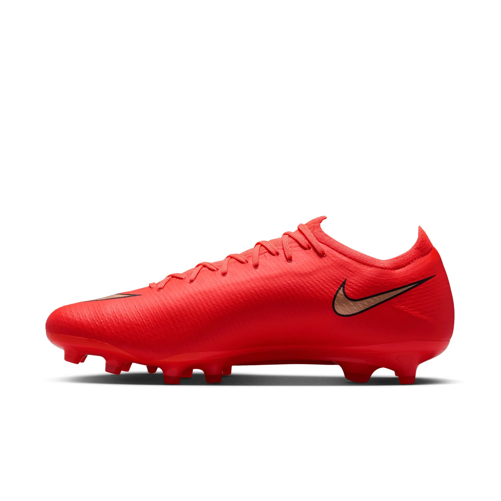
Entrenamiento
Mayor amortiguación en el talón para entrenar a diario.
$64.90
Ver más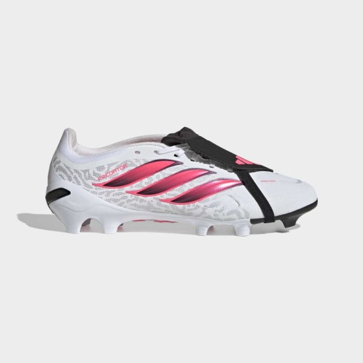
Juvenil
Talla 30 a 38, peso reducido y cierre con velcro para categorías infantiles.
$44.90
Ver más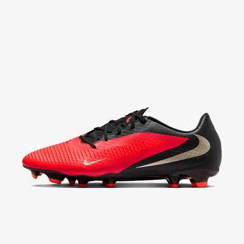
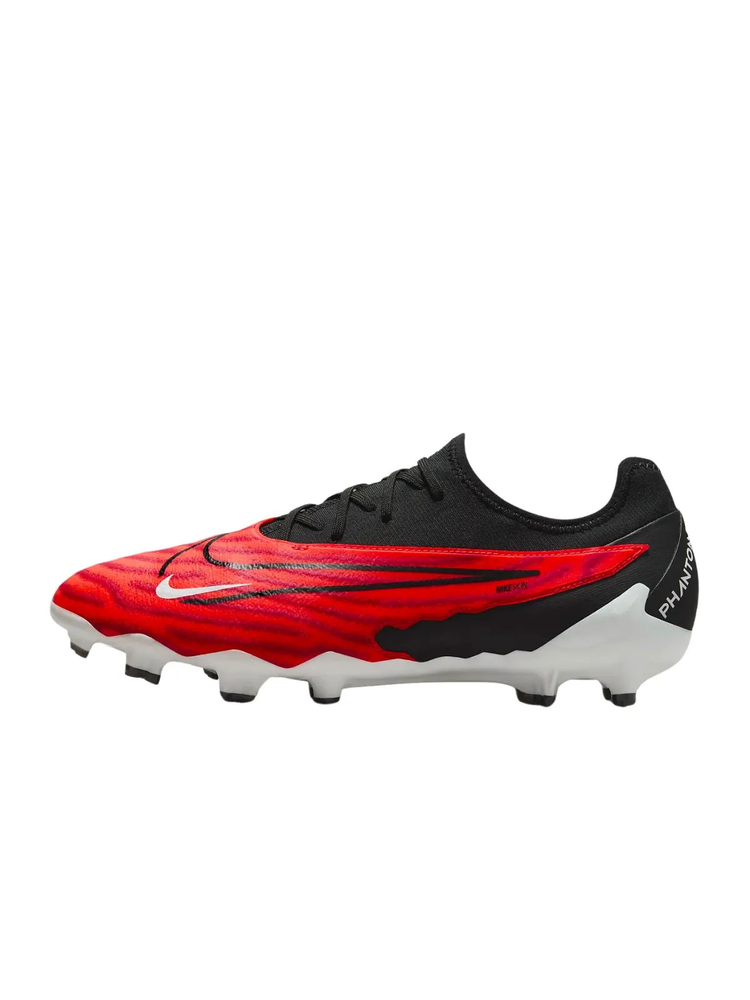
Césped natural firme
Horma ancha para pies con empeine alto y jugadores de defensa.
$79.90
Ver más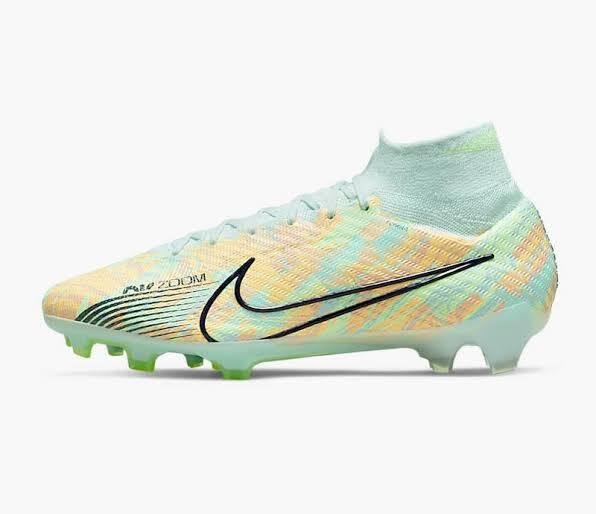
Competición
Menos de 200 g por pie, pensada para mediocampistas creativos.
$109.90
Ver más